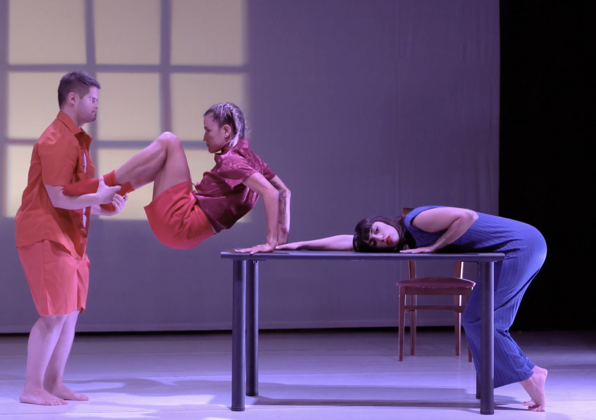

SUITE

Suite è uno spettacolo di danza contemporanea che nasce dall'incontro tra movimento, musica e relazione.
di frammenti,
immagini,
possibilità.
In ambito musicale, la suite — dal francese “successione” — è una composizione formata da una serie di brani pensati per essere eseguiti in sequenza. Ogni pezzo è un mondo a sé, ma parte integrante di un disegno più ampio, come se ciascun movimento fosse una tappa di un viaggio emotivo.
Ma “suite” è anche un termine che indica un particolare tipo di camera d'albergo: uno spazio privato, articolato come un piccolo appartamento, dove si vive per un tempo limitato, in transito tra un prima e un dopo.
La nostra Suite nasce proprio da questa doppia ispirazione. È uno spettacolo composto da frammenti, episodi, immagini in movimento, che si susseguono come in una partitura danzata.
Ogni quadro è un momento della vita, una sfumatura dell'esperienza umana: gioia, smarrimento, desiderio, paura, perdita, scoperta.
Otto interpreti danno corpo e voce a questo mosaico emotivo, intrecciando gesto e suono in una narrazione che scorre come un filo sottile.
Suite è un microcosmo in cui si riflette la complessità dell'esistenza. Un percorso fatto di passaggi, di eventi talvolta lieti, altre volte dolorosi, che scandiscono il tempo della nostra vita.
È anche — e soprattutto — un enigma, una tensione sottile che attraversa l'intero spettacolo: qualcosa accade, ma il significato non è subito chiaro. È una domanda che si affaccia, una sensazione che ci abita, un mistero da comprendere — forse — solo alla fine.
Questo spettacolo non dà risposte, ma lascia spazio. Spazio per sentire, per riflettere, per riconoscersi.
Come una suite musicale o una stanza d'albergo, Suite accoglie, accompagna e poi lascia andare, ma qualcosa — una nota, un gesto, un'immagine — resta con noi, al di là della scena.
SOUND
La musica elettronica di Kino, suonata dal vivo, accompagna ogni frammento, creando uno spazio sonoro che è esso stesso protagonista.
LIGHT · SPACE
Le luci e la scena, curate da Antonio Rinaldi, costruiscono atmosfere sospese e silenziose, evocando la luce, le geometrie e le solitudini dei quadri di Edward Hopper, in cui ogni immagine sembra racchiudere una storia ancora da raccontare.